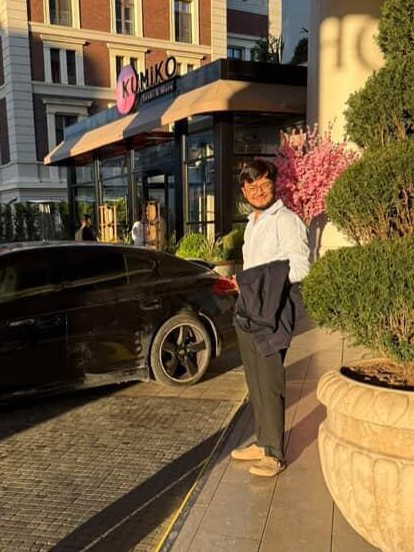

BCA & Data Science Student
I am currently pursuing a Bachelor of Computer Applications (BCA) at Navrachana University, Vadodara, while simultaneously enrolled in the prestigious online B.Sc. program in Data Science and Programming from the Indian Institute of Technology (IIT) Madras.
With a strong foundation in computer science and a focused interest in data analytics and programming, I am developing the technical and analytical skills needed to solve real-world problems through data-driven solutions. My academic journey reflects a commitment to excellence, continuous learning, and adaptability in a fast-evolving digital landscape.
I am eager to explore opportunities in data science, software development, or research that allow me to apply my knowledge, contribute meaningfully, and grow professionally.
Bachelor's of Science, Data Science
Jan 2025 - May 2029
Bachelor of Computer Applications, Computer Science
Aug 2024 - May 2028
Spécialités Mathématiques & Physique-Chimie
2012 - 2023
BIZENIX · Full-time
Oct 2025 - Present · Vadodara, Gujarat, India
As the Founder of Bizenix, I am leading the vision, strategy, and execution of a tech-driven business solutions platform. My role includes:
Focused on creating smart, sustainable, and impactful business solutions for startups, SMEs, and enterprises.
SkillFied Mentor · Internship
May 2025 - Jul 2025 · Remote
BONAF · Internship
May 2025 - Jul 2025 · Pointe-Noire, Republic of the Congo
Basant Nihalani And Co · Full-time
Dec 2024 - Jan 2025 · Vadodara, Gujarat, India
SOCOTRANS · Full-time
Jul 2024 - Aug 2024 · Republic of the Congo
Real Canadian Superstore · Part-time
Jan 2024 - May 2024 · Canada
Managed cash transactions, provided customer service, and handled data entry for sales records in a fast-paced retail environment.
Ste Topchine SARLU · Full-time
Dec 2023 - Jan 2024 · Republic of the Congo
Supported import/export operations, managed client accounts, and contributed to social media marketing and sales initiatives.
Email: adityachandiramani@outlook.com
LinkedIn: linkedin.com/in/adityachandiramani
GitHub: github.com/aditya-v-1312